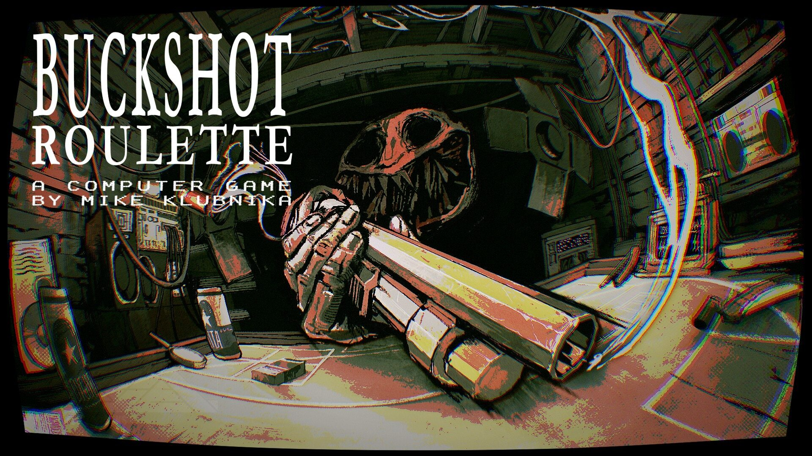
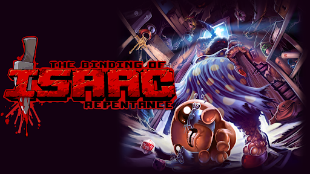
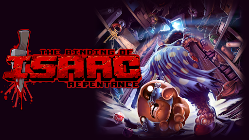
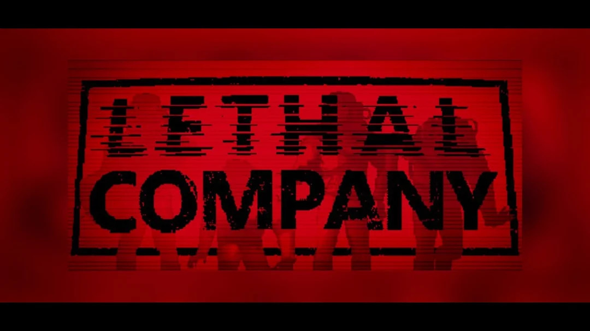
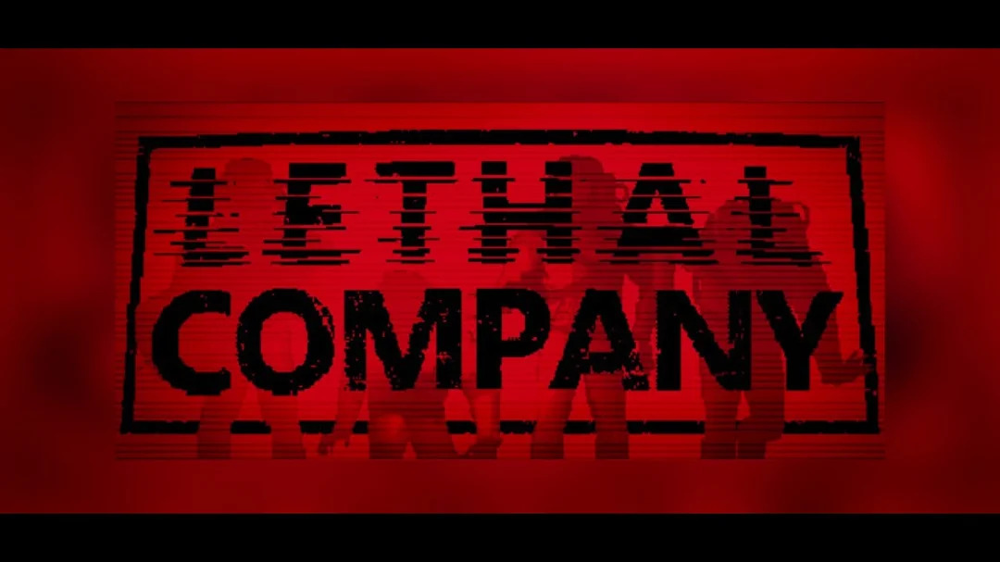

Les Jeux Indépendants
 

Les jeux indépendants, plus communément désignés sous le diminutif "jeux indés", sont des jeux créé généralement par un seul individu ou une équipe plutôt réduite et ne bénéficiant pas du soutien financier d'un grand éditeur de jeux vidéos. Les jeux indépendants vont donc à l'inverse des jeux dit "AAA" ou "triple A" tel que Super Mario Bros. ou God of War, ceux-ci étant développés par de grandes firmes possédant des moyens financiers et matériels plus conséquents.
Il existe une grande variété de jeux indés: du jeu de rôle en pixel art comme Undertale au jeu d'horreur multijoueur qu'est Lethal Company. Jeux rétro ou novateurs, de nouveaux jeux indés sont constamment poussés vers le devant de la scène immense du monde du jeu vidéo pour leurs messages forts en émotions, leur gameplay innovant ou tas d'autres raisons.
Je vous propose donc un petit voyage à travers ces jeux afin d'en comprendre leurs origines, le travail qu'ils ont représentés et les raisons de leur succès avec la séléction suivante:
Buckshot Roulette: L'humain, la machine et le fusil à pompe Celeste: Une épreuve physique, mais aussi mentale Geometry Dash: Une seule touche pour des millions de joueurs Lethal Company: Le bac à sable chaotique multijoueur There is no game: ...ceci n'est pas un lien
 
